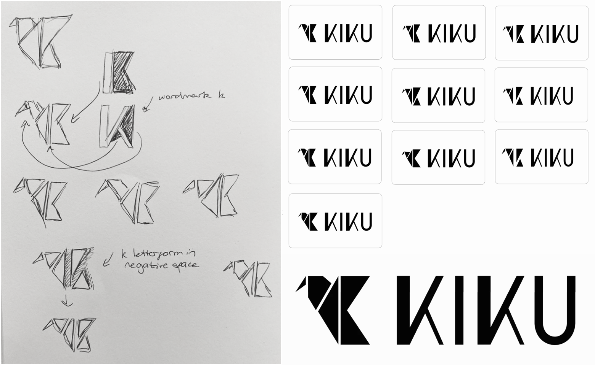
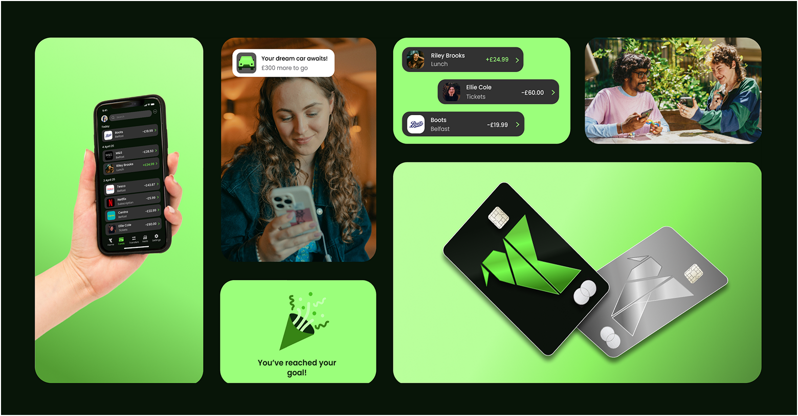
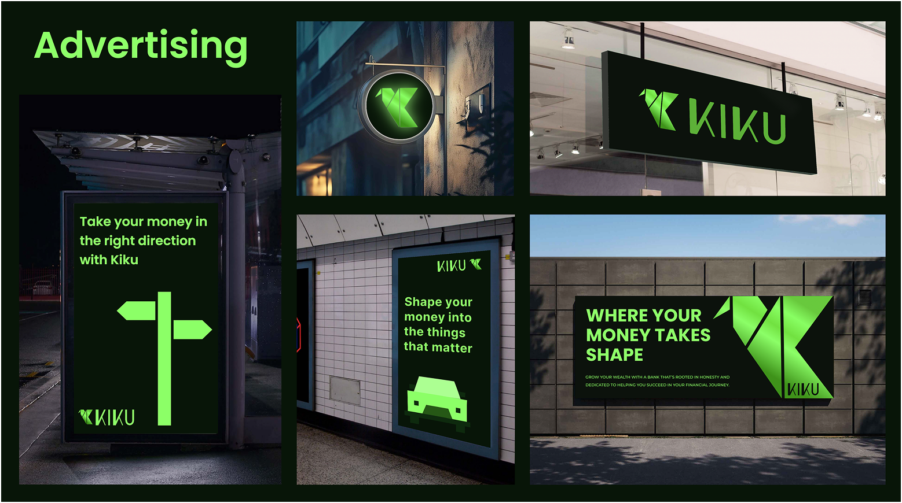
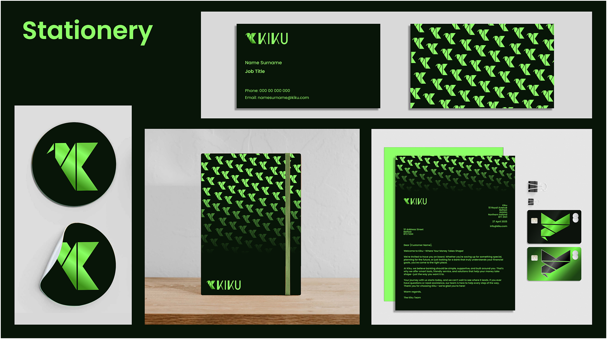

Kiku
Where your money takes shape.
Kiku is a modern bank app which seeks to empower the next generation to take control of their financial journey. Through offering personalised insights and jargon-free advice, Kiku demystifies complex financial concepts, promoting confident decision-making.
Brief
The brief was to design a digital banking brand aimed at young people, including a mobile app, a set of brand guidelines, and a landing page.
Concept
The concept for my bank would be to help young people learn how to prosper with their money by helping them to understand it and their opportunity. I felt that a lot of young people didn't consider investments, managing their savings, etc as they didn't understand a lot of the financial jargon that is often thrown around. I wanted to create a bank that was jargon-free, keeping things simple and guiding the users through their financial journey with simple explanations so they understand what they can do with their money with tailored advice, suggestions and goals.
Research
I combined branch interviews, a user questionnaire, competitor analysis, and a review of successful UI patterns to understand how young people engage with banking. The findings revealed common frustrations with jargon-heavy language, information overload, and uncertainty around saving, which shaped the direction of the project toward clarity, simplicity, and confidence-building features.

Brand Development
I chose the name Kiku for my bank brand for its layered symbolism. In Japanese, it refers to the chrysanthemum flower, a cultural emblem of rejuvenation and prosperity. This sense of renewal aligns with the brand's mission to help young people craft stronger financial futures.
After some deliberation on selecting a typeface, I opted for a custom one. This custom wordmark draws inspiration from the precision of Japanese origami, reflecting both craftsmanship and the idea of shaping something personal, as well as shaping the user's financial journey. Varying font weights were used to represent individuality, highlighting how the brand offers tailored solutions for every customer.
The logomark brings together multiple meanings in a single, cohesive form. At its core, it shapes the letter "K," while also abstractly forming a phoenix—an enduring symbol of resilience, rebirth, and transformation. This duality captures the brand's values: igniting growth, empowering users, and guiding them toward prosperity and balance. The phoenix's connection to fire also echoes the vitality and strength associated with the Kiku flower itself.
Supporting these elements is the colour palette centred on green, with a deep, dark green as the foundation. This choice conveys stability and confidence while also symbolising growth, prosperity, and balance.
Brand Application
I began with card designs, exploring a standard horizontal layout with a minimal approach, featuring only the logo. I pushed this idea further by shifting to a vertical orientation, allowing the logo to take centre stage. Choosing metal cards enhanced the premium feel, complemented the gradient logo, and reinforced the brand's values of stability.
For advertising and stationery, I carried through the same minimalistic ethos. Bold typography and simple, origami-inspired icons echoed the logomark's design language, creating a cohesive visual identity. Taglines such as "Where your money takes shape" tied back to the themes of craftsmanship and transformation. Supporting graphics, like upward-pointing arrows derived from the logo, reinforced consistency and the brand's forward-thinking outlook.
  Banking App
I initially used Revolut as a reference point to understand common app patterns, however, I quickly moved beyond it, redesigning components, rethinking interactions and creating new flows. Most of the screens were ultimately designed from scratch, with the dashboard being the central and most significant piece, crafted to strip away unnecessary complexity and present key financial information in a clean, intuitive way.
Landing Page
I focused on highlighting the app's core features while weaving in the brand's values of simplicity and integrity. The design balanced clear, benefit‑driven messaging with a clean visual hierarchy, ensuring that users could quickly understand what the app offers. The result was a page that showcased functionality and reinforced brand identity.
Brand Guidelines
I set out to create a detailed and comprehensive document that captured the brand identity in a clear, structured way. Beyond just logos and colours, the guidelines were designed to encapsulate the full identity: tone of voice, visual language, and design principles. The result was a reference point that not only standardized design decisions but also communicated the spirit of Kiku as a brand.
While the brand guidelines provided a strong foundation, I found them somewhat limiting for displaying the full depth of details and practical usage. To address this, I went beyond the initial scope and created a dedicated design system website. This platform allowed me to present components, patterns, and principles in a more dynamic, accessible way.
Although not required, it became one of the project's biggest successes—serving as a living resource that made the brand easier to apply consistently across all touchpoints.